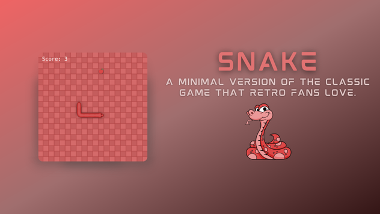
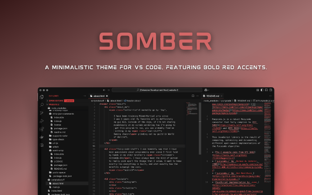
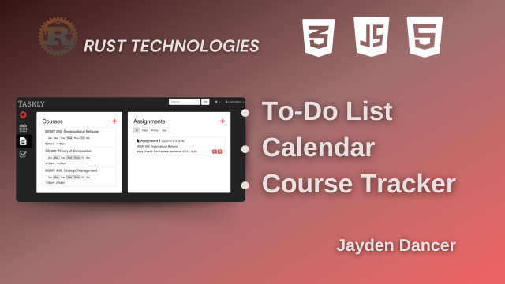

About
I’m a developer who loves building accessible, pixel-perfect interfaces that look amazing and work like a dream. I thrive at the crossroads of design and development, crafting experiences that are as fun to use as they are to build!
I’m currently a Senior Front-End Engineer at Kreative Media, specializing in accessibility. I help create and maintain UI components that power our frontend, ensuring we meet web accessibility standards and deliver an inclusive user experience.
I've had the opportunity to develop software across a variety of settings — from advertising agencies and large corporations to start-ups and small digital product studios.
Outside of work, you can find me sparring in the cage, rolling on the mats, leveling up in Tekken, or raiding for long hours in Azeroth.
Experience
2025 — Present Create and maintain key components for Kreative Media’s frontend. Work with developers, designers, and product managers to advocate for best practices in web accessibility.
- JavaScript
- TypeScript
- React
- Storybook
sept — dec 2024 Collaborated with student designers and engineers on volunteer projects to create brands, design systems, and websites for local organizations.
- JavaScript
- SCSS
- Hugo
- WordPress
jun — sept 2024 Build and optimize features for Nike’s web experience. Collaborate with teams to drive innovation and ensure seamless accessibility integration.
- JavaScript
- TypeScript
- React
- Django
Projects
- 
Snake (v3)
A classic Snake game built from scratch using HTML, JavaScript, and CSS, offering smooth gameplay and responsive controls.
- 
Somber Theme
Somber is a custom VS Code theme designed to enhance your coding experience with a sleek and modern interface.
- 
Taskly Prototype
An app that simplifies managing academic responsibilities, helping you stay on top of deadlines and commitments.
Username: user | Password: pass
(Not Available on Mobile)